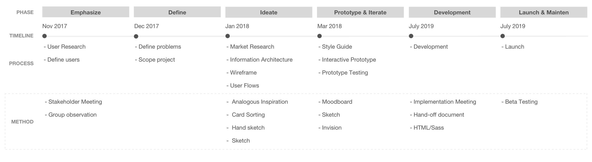
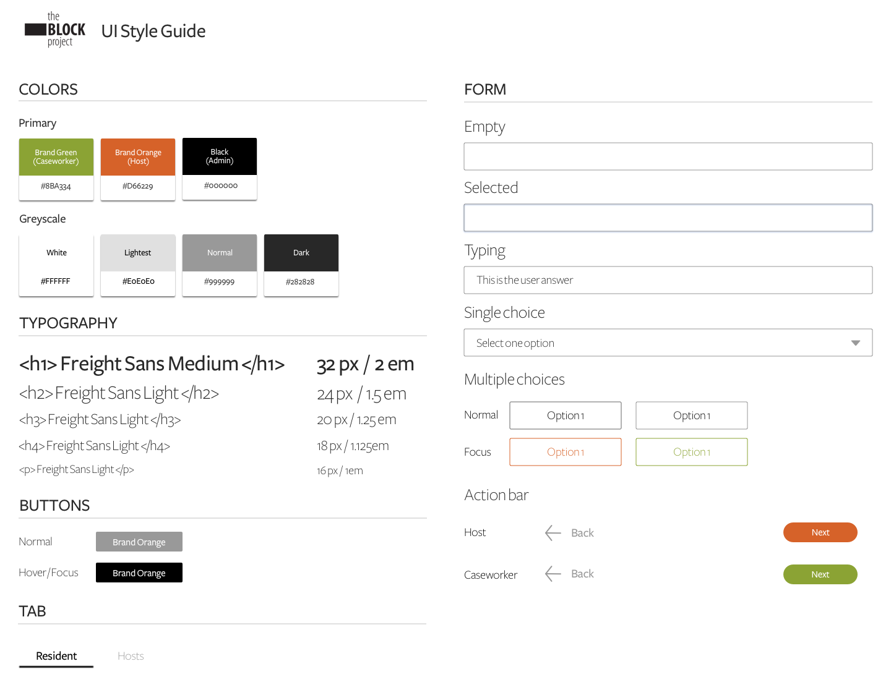

PROCESS
{kind=link}
Image: Process Timeline
— Process 1 of 5 —
Emphasize
Stakeholder Meeting
PUTTING PIECES TOGETHER
To kick off the project, I facilitated a stakeholder meeting with the Executive Director, Program Manager, and an Engineer to put everyone on the same page and reached the objectives of:
- Recognizing The BLOCK Project’s current focus
- Gaining the knowledge of how the project works in detail
- Uncovering the intended users’ behaviors, needs, and challenges
Below are two of the key quantitative and qualitative aspects that allowed the team to make an assumption of the initial problem space: How to help The BLOCK Project staffs match hosts and residents?
{kind=link}
“Our matching process required lots of paperwork, time, and coordination with caseworkers, hosts, and residents.”
Sarah, Community Director at Facing Homelessness
Participant Observation
EMPATHIZING PEOPLE WHO LIVE OUTSIDE & INSIDE
Due to the sensitive topic on homelessness, I was not able to interview the residents and hosts directly. However, I emphasized potential hosts' and residents' lives by participating in a Community Bridging event where 9 people who live outside and inside are invited to share their own stories.
“Everyday, I am trying hard to secure my belongings from being stolen.”
Potential Resident A
“I just want to be treated as normal people.”
Potential Resident B
“I want to learn what I can do to help build a healthy and connected community.”
Potential Host
The stakeholder meeting and Community Bridging event allowed me to outline the user profiles for the design reference. Since Residents have difficulties getting access to the internet, I set Caseworkers as one of the primary users who help Residents to match with Hosts. And Admins will be overseeing the whole matching process as a secondary user.
{kind=link}
— Process 2 of 5 —
Define
User Journey Map
FOCUSING ON THE FIRST STAGE
After the user research, I visualized the holistic user experience for multiple users as they interact with one another during the whole journey. It highlighted the pain points of the users and helped me communicate the complex process with the team to define the project scope. Since the stage of Profile Completion is a significant starting point for users and it sets the first impression for the users, our team decided to start out by focusing on this stage.
{kind=link}
KEY FINDINGS
I synthesized the top three painpoints and corresponded opportunities for the first stage- Building Profile- based on the user journey map.
{kind=link}
SETTING PROJECT ROADMAP
Based on the findings from the Emphasize Phase, I was able to set up three-levels project roadmap which uses the "How Might We " to reframe the problems we are going to solve for each phase.
{kind=link}
— Process 3 of 5 —
Ideate
Analogous Inspiration
COLLECTING DESIGN PATTERNS
To understand what the best practices are for users to build and view profiles, I conducted an analogous inspiration exercise by probing the profile process of Airbnb and HomeAway. The reason of choosing these two companies is they are all about sharing the space by creating the best human connection which meets out project goal in the high level.
{kind=link}
TAKEAWAYS
Card Sorting
GROUPING AND VALIDATING QUESTIONS
I grouped 21 questions into six categories and conducted online card sorting survey via Optimal Workshop with five participants to validate if the grouping questions makes sense to them.
{kind=link}
Information Architecture
THINKING BIG AND SCALABLE
With the best practice form patterns and grouping questions, I created an information architecture which demostrate the site structure of the app. To make the project scalable, I also brainstormed the second and third stage with the team to envision the project.
{kind=link}
Wireframing
CONCEPTUALIZING SOLUTIONS
Aftering the high-level structure was confirmed with the team, I skteched solutions to help primary users to complete their task- building and view profiles.

User Flow
MAKING SURE USER FLOWS WORK
According to the initial solutions on the paper, I created the user flows in Sketch to sync the flow with the Program Manager and Community Executive who worked closely with the Hosts and Caseworkers and also met with developers to make sure the flow is workable for the backend.
{kind=link}
{kind=link}
— Process 4 of 5 —
Prototype
Moodboard
VALIDATING ABSTRACTION
Befor getting into the interactive prototyping, I worked on the visual design which helped me to add the style and look to high-fidelity prototypes.
Since the product will be one of the major communication tools across the process of The BLOCK Project, I crafted the mood board to refine an overall style before diving into the visual design process. By moodboarding, it also allows me to college the existing styles from two different websites, Facing Homelessness and The BLOCK Project, and to convey the consistent and aesthetic look and feel of the final design with the stakeholders and the product team.
{kind=link}
Style Guide
BUILDING STYLING COMMUNICATION TOOL
I then crafted the color scheme based on the moodboard as a communication tool with the stakeholders and developers.

{kind=link}
Rapid prototyping
TESTING AND ITERATING
Here is the key design variation I explored for the "side notes". Four out of seven users highlighted the disconnection between the questions and side note which was initially designed to help user completing the form. To increase the scannability, I provided two options to test the design with five participants to opt for the best practice.
{kind=link}
{kind=link}
{kind=link}
— Process 5 of 5 —
Implement
Design Implementation
As the developers opted for ember.js as the project's developing framework, I learned how to edit HTML/Sass and implemented the final prototype design to ember.js.
Revised user flow During the development, we improved the user flow and are working on the final touches before launching the web app in June.
{kind=link}
Image: Communicating with the Facing Homelessness staff and engineers on the revised user flow
SOLUTIONS
Key features
Four key features were designed to help Hosts and Caseworks to complete the profile form more efficiently and in a trust-worthy approach.
Latest live site
The site is live now for testing and keep optimizing it by gathering more feedback from real users.
{kind=link}